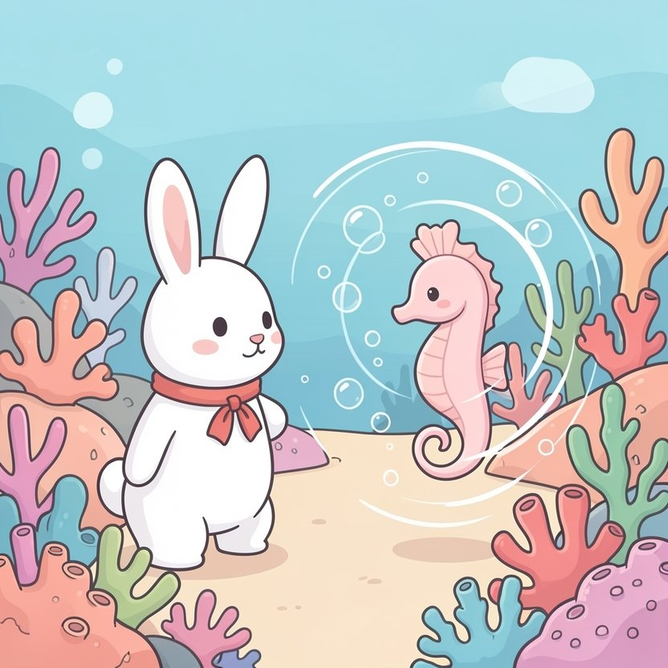

Titistoire › Les Étoiles (3-6 ans)
Rosie et la promesse à Perle
Une histoire de Rosie la lapine pour parler de : tenir sa promesse.

▶ Écouter et regarder l'histoire
Gratuit, sans inscription : la voix lit, le texte suit mot à mot, les images tournent comme dans un album.
Le texte de l'histoire
Tout au fond de l'océan, sur le récif des Mille-Bulles, Rosie a une amie minuscule : Perle, l'hippocampe. Perle est si timide qu'elle rosit jusqu'au bout de la queue dès qu'on pose les yeux sur elle.
Pourtant, Perle a un secret : elle danse. Elle tourne, elle ondule, elle fait des boucles de bulles. Et samedi, pour la toute première fois, elle dansera sur la scène de coquillages, devant le récif tout entier.
« J'ai le trac, Rosie, j'ai tellement peur… Tu viendras ? Si tu es au premier rang, j'y arriverai. » Rosie pose une patte sur son cœur. « Promis, juré ! Je serai là avant tout le monde ! »
Samedi arrive. Rosie nage vers le récif quand trois dauphins farceurs lui barrent la route. « Hé, la rapide ! Grande course des Courants ! Le vainqueur remporte cette couronne de corail ! »
Une course ! Les pattes de Rosie frétillent toutes seules. « C'est que… j'ai promis à une amie… », bredouille-t-elle. « Ça dure cinq minutes ! se moquent les dauphins. Tu as peur de perdre ? »
Peur de perdre, elle ? Jamais de la vie ! « Cinq minutes, calcule Rosie. J'ai bien le temps. Un, deux, trois… »
Zoum ! Les courants l'emportent dans un tourbillon de bulles. C'est comme un toboggan qui ne finirait jamais. Elle double un dauphin, puis deux, puis trois. « Encore un tour ! » réclament-ils.
Encore un tour. Puis la revanche. Puis la revanche de la revanche. Rosie remporte la couronne de corail. Elle la pose entre ses deux oreilles et gonfle la poitrine, fière comme une reine.
C'est alors qu'elle aperçoit la lumière, là-haut, à la surface. Elle n'est plus jaune : elle est orange. Le soir tombe. Rosie plaque ses pattes sur ses joues. « Le spectacle ! »
Pendant ce temps, sur le récif, chacun s'est installé dans son coquillage. On fait silence. Le rideau d'algues s'ouvre. Perle avance sur la scène, minuscule.
Elle cherche au premier rang. Un coquillage est resté vide. Elle cherche au deuxième rang. Au dernier. Partout. Rosie n'est pas là.
La musique commence. Perle essaie de tourner. Mais ses nageoires tremblent trop, bien trop. Elle devient toute pâle, pâle comme le sable. Et elle file se cacher derrière une grosse éponge jaune, sans avoir dansé.
Rosie nage à en perdre haleine. Trop tard : quand elle arrive, tous les coquillages sont vides. Seul Octave le poulpe est encore là, qui balaie la scène avec trois de ses bras.
« Le spectacle ? soupire Octave. Oh, il n'a pas eu lieu. La petite attendait quelqu'un. » Son œil rond s'arrête sur la couronne de corail. « Jolie couronne. »
La couronne, soudain, pèse lourd comme un rocher sur la tête de Rosie.
Elle finit par dénicher Perle, blottie tout au fond d'une anémone rose. « Perle ! Regarde, j'ai gagné une couronne, je te la donne ! » Perle ne se retourne pas.
« Je ne veux pas de couronne. Je voulais que tu sois là. Tu avais dit promis, juré. » Sa petite voix ne crie pas, elle tremble à peine. C'est pire.
Rosie voudrait expliquer. Les dauphins, les cinq minutes, la revanche. Mais, assise dans le sable, la couronne tombée à côté d'elle, elle sent bien que toutes ses raisons sont plus petites que sa promesse.
« Tu as raison, murmure Rosie, les oreilles basses. Une promesse, ce n'est pas “si j'ai le temps”. J'ai eu tort, Perle. Je ne peux pas rattraper samedi. Mais est-ce que je peux essayer de réparer ? »
Toute la nuit, dans l'eau noire piquée de petites lumières, Rosie file de grotte en grotte. Elle toque chez les crabes, chez les poissons-lunes, chez la vieille tortue. « Demain soir ! Revenez tous ! S'il vous plaît ! »
Le lendemain, Octave raccroche le rideau de ses huit bras. Et Rosie arrive avec deux heures d'avance. Elle s'installe au premier rang, les pattes croisées, et ne bouge plus. Pas même quand trois dauphins passent en sifflant.
Le rideau s'ouvre. Perle avance, minuscule. Elle cherche au premier rang… et cette fois, elle y trouve deux grandes oreilles, et deux pattes qui lui font coucou.
Alors Perle danse. Elle tourne, elle ondule, elle dessine des boucles de bulles qui montent, qui montent jusqu'en haut de la mer. Bouche bée, tout le récif retient son souffle. Rosie applaudit à s'en faire mal aux pattes.
La couronne de corail ? Rosie l'a suspendue au-dessus de la scène, pour Perle. Et depuis ce jour, quand elle dit « promis », elle ne dit plus « juré ». Elle n'en a plus besoin.